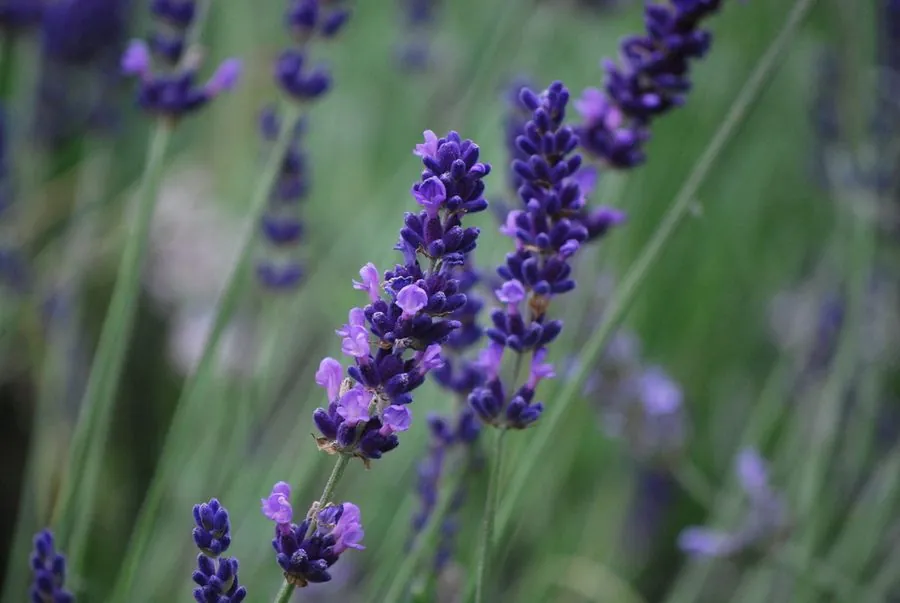

花卉与草本 · 植物界
薰衣草 Lavandula angustifolia

唇形科半灌木，穗状花序蓝紫芳香，可提取精油、制作花茶与香包，是普罗旺斯花田的代表植物，也是重要的芳香经济作物。
- 分类
- 门被子植物门纲木兰纲目唇形目科唇形科属薰衣草属
- 栖息环境
- 地中海沿岸干燥向阳的山坡与石灰岩地，喜光、耐旱、怕涝
- 地理分布
- 原产地中海沿岸，法国普罗旺斯、保加利亚及中国新疆伊犁栽培较多
- 保护级别
- 暂无评估
物种志
薰衣草为唇形科薰衣草属半灌木，株高 30–100 厘米，老枝木质化，嫩枝方形，全株被灰白色星状毛。叶片线形至披针形，长 2–6 厘米，灰绿色。轮伞花序聚集成顶生穗状花序，花冠蓝紫色，二唇形，花期 6–8 月，果期 8–9 月。
薰衣草原产地中海沿岸的干燥山坡，喜阳光充足、冬季温和、排水极好的环境，耐旱怕涝，忌高温高湿。花穗在初开时香气最浓，此时采收可提取精油，主要成分是芳樟醇和乙酸芳樟酯，广泛用于香水、洗护用品和芳香疗法；干燥花穗可制作香包、花茶。法国普罗旺斯、保加利亚和英国是著名产地，中国新疆伊犁也形成了规模化的薰衣草种植区。
形态与习性
- 株高30–100 厘米，老枝木质化
- 花期6–8 月，花穗初开时香气最浓
- 果期8–9 月，小坚果
- 光照极喜光，光照不足开花稀少
- 水分耐旱，忌积水，雨季注意排水
- 土壤疏松、排水良好的石灰质沙壤土
- 主要用途提取精油、干花、香包与花茶
趣味知识
- 薰衣草精油的主要香气成分是芳樟醇和乙酸芳樟酯，广泛用于香水和洗护用品。
- 花穗在花苞初绽时采摘香气最浓，完全开放后香气反而下降。
- 普罗旺斯高原的薰衣草多在海拔 600 米以上种植，昼夜温差大有利香气积累。
- 干燥的薰衣草花穗可放入衣柜驱虫增香。